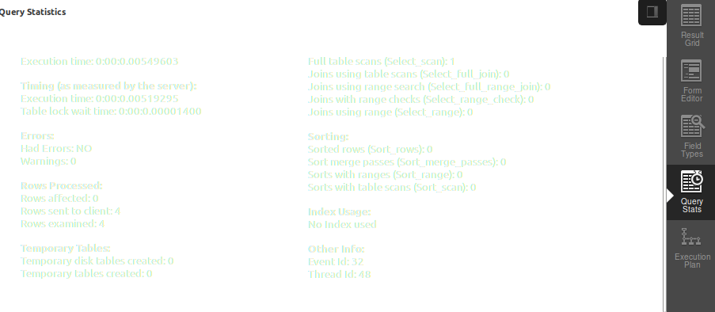

Mysql Workbench
Índice
- Vistas
- Paneles en la Vista Desarrollo SQL
- Paneles en la Vista Modelado de Datos
- Sincronización entre Modelo y Esquema
- Importación de datos
- Performance
Vistas
- Desarrollo SQL
- Modelado de Datos
- Wizard de Migración

Desarrollo SQL
Inicia con la pagina de Conexiones, dado que es necesario realizar una para correr consultas
Desde aquí tendremos acceso a correr consultas, crear tablas, agregar columnas, crear procedimientos, indices, etc.
Modelado de Datos
Interfaz para crear utilizando elementos arrastrables, nuestros modelos relacionales de manera fácil
Es posible sincronizarlos con los esquemas de una conexión, desde ambass direcciones
Wizard de Migración
Desde aquí nos permitirá facilitar la migración desde otros motores de SQL: MSSQL, Oracle, IBM, Postgres, etc.
Paneles dentro de la vista de Desarrollo SQL
- Panel de Navegación
- Panel de Consultas
- Panel de Resultados
- Panel de Snippets
- Panel de Información
Panel de Navegación

Panel de Consultas
Panel de Resultados
- Grid
- Formulario
- Tipos de Datos
- Estadisticas de Querys
- Plan de Ejecusión
Panel de Resultados Grid
Panel de Resultados Formulario
Panel de Resultados Tipos de Datos
Panel de Resultados Estadisticas

Panel de Resultados Plan de Ejecusión
Panel de Snippets
Nos permite guardar templates de las consultas que hacemos
- MySnippets
- Shared
- SQL DML (Predefinidos)
- SQL DDL (Predefinidos)
- SQL DB Mngt (Predefinidos)
Panel de Información
Vista de Modelado de Datos
En esta vista podremos:
- Dibujar diagras de modelo relacional
- Importar los esquemas de una DB y convertirlos en Diagrma (Reverse Engineering)
- Exportar los Diagrmas y aplicarlos a un esquema de una DB (Forwaerd Engineering)
- Mantener sincronizaos un esquema y un modelo